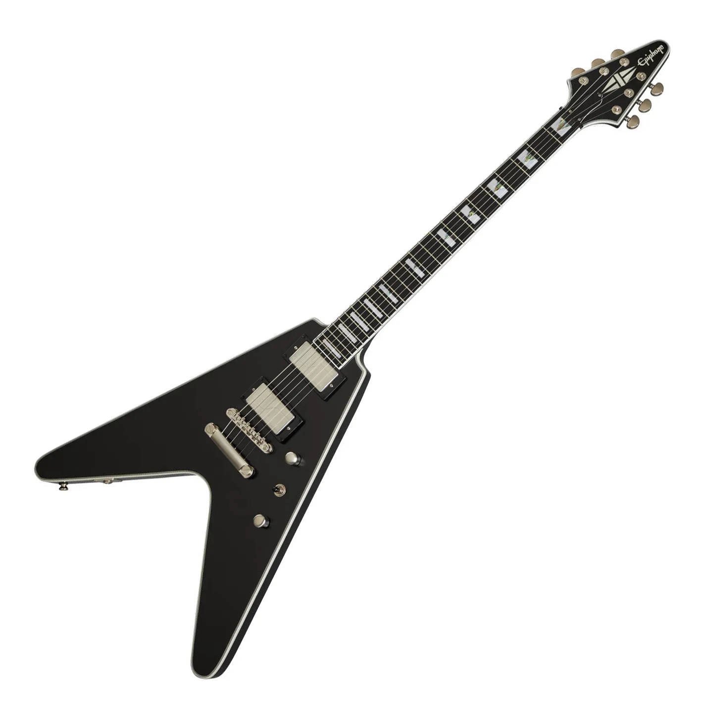
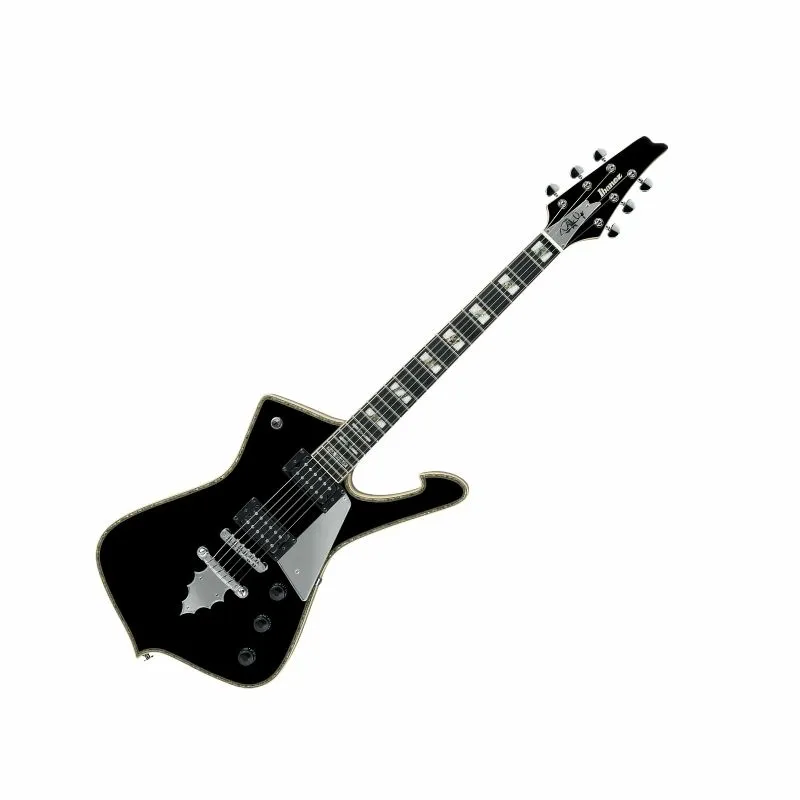
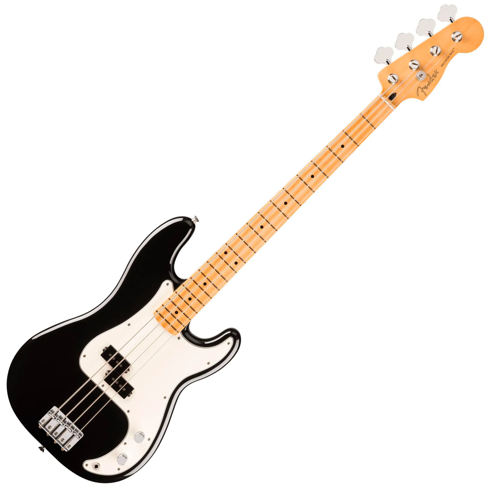

OuterHeaven
Libera tu rockstar interior
Libera tu rockstar interior
|  |
Epiphone Flying V Prophecy - Black Aged Gloss Diseñada para guitarristas modernos que buscan agresividad, velocidad y estilo, la Flying V Prophecy combina el icónico diseño futurista con especificaciones de alto rendimiento. Equipada con potentes pastillas Fishman Fluence, ofrece un tono versátil que va desde lo clásico hasta lo metal más pesado. Su mástil delgado y diapasón de ébano garantizan una ejecución rápida y precisa, mientras que el acabado negro envejecido le da un look oscuro y elegante. Una bestia moderna con alma vintage. Precio: $996.900 |
|  |
Ibanez PS120 Iceman - Black Inspirada en el legendario estilo de Paul Stanley (KISS), la Ibanez Iceman PS120 combina un diseño agresivo con una construcción de alta calidad. Cuenta con cuerpo de caoba, tapa de arce, mástil set-in y pastillas Seymour Duncan que ofrecen un tono potente y definido. Perfecta para guitarristas que buscan presencia escénica y sonido profesional. Precio: $999.990 |
|  |
Fender Player II Pbass - Black Un clásico que nunca pasa de moda. El Player II P-Bass ofrece el legendario tono Fender con un diseño moderno y cómodo. Su pastilla split-coil entrega un sonido potente y definido, perfecto para cualquier estilo. Con cuerpo de aliso, mástil de arce y acabado negro brillante, este bajo combina elegancia, fiabilidad y ese punch característico que lo hace imprescindible en cualquier escenario. Precio: $1.154.990 |